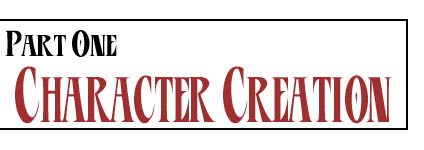

Stage One: The Basics
When you first start the character creation process for Eiridia, you have 80 Character Points
which you use to "purchase" abilities, stats, etc. Spend these wisely, because everything in
character creation uses these points! From here on, Character Points will be referred to as CP.
Attributes
The first thing you should do when you create a character for Eiridia is put points into your
character's attributes, or stats. Each attribute can run from 1 to 10, with 1 being minimum. Human
average for all of these is 3. Human maximum is generally 6, though it is assumed the player characters
are just that much better than mere mortals.
Physical Attributes:
Strength - This is how much physical power your character has.
Dexterity - This measures how agile your character is.
Endurance - This determines how long your character can perservere.
Mental Attributes:
Intelligence - A measure of smarts.
Willpower - How strong (or weak) willed your character is.
Arcana - The magical attunement of your character.
Social Attributes:
Appearance - How attractive your character is.
Charisma - A measure of your character's natural charm.
Fortune - Luck!
Stage Two: Classes
Your character's Class is what occupation your character follows. You cannot change class, so
choose wisely.
Class List
Samurai - honor-bound warrior, focuses on balance
Vulture - scavenger warrior, focuses on scavenging!
Channeler - soul-forged warrior, focuses on martial arts
Magus - collegiate mage, focuses on elemental magic
Shaper - Draconian mage, focuses on shaping magic
Shadowdancer - Void mage, focuses on Void magic
Shaman - priest, focuses on divine magic
Paladin - devout warrior, focuses on power
Stage Three: Races
Though there are a great many humans in Eiridia, there are also other races which populate the
world. Which race you choose may have a major effect on how the world sees you, and vice versa.
Race List
Human - humans!
Driasha - wolf spirits
Tandari - angelic descendents of the gods
Shadre - cat spirits
Dragonhalf - dragon-human crossbreeds.
Kirin - unicorn spirits.
Stage Four: Skills
Skills are some of the abilities your character has. They're tied to your character's Attributes. What I mean by this is, when doing a "Skill Check" to see if you can use a skill successfully, you add your relevent Attribute to the level of the skill that you have, and roll that many d10s. If you get a number over the Target Number (as determined by Character Level, see below) on one of the dice you rolled, you get one success. The more times you get over the TN, the more successes you get. If you don't get any rolls above the TN, you fail. If you roll a 1 on any die, and get no successes on your other dice, then you fail CRITICALLY. The number of successes you need to successfully use a skill is determined by the GM.
Skills cost 1 Character Point per level. When trying to use a skill that you have at level 0, use the relevant Attribute
when performing the skill check.
List of Skills
Martial Skills (Dex based)
Archery
Brawl
Martial Arts
Melee
Thrown
Dodge
Speed
Knowledge Skills (Int based)
Crafts
History
Magic
Medicine
Language
Social Skills (Cha based)
Politics
Intimidation
Intuition
Streetwise
Etiquette
Survival Skills (End based)
Survival
Running
Resistance
Meditation
Athletics
Stage Five: Additional Information
Character Levels
This is determined by the GM, not the player. The higher the Character Level, the easier it is for the player characters to do things - the following are Character Levels, and their corresponding Target Numbers.
Hero - 7
Legend - 6
Ascendant - 5
Miscellaneous Character Stats
Hit Points: Hit Points are what allows your character to live. When you get hit in combat, you lose HP. HP are purchased in lots of 5 per Character Point.
Mana: Mana is the energy you have available to cast spells or perform other magic. Initially equal to your Arcana score, but may be increased by the value of your Arcana per Character Point.
Attack Dice: This is how many dice you roll to attack. Equal to your Dexterity + combat skill (the Martial Skill you're using to attack).
Defense Dice: How many dice you roll to defend from attacks. Equal to your Dexterity + dodge skill.
Back to the Eiridia Index
Back to the Main Page